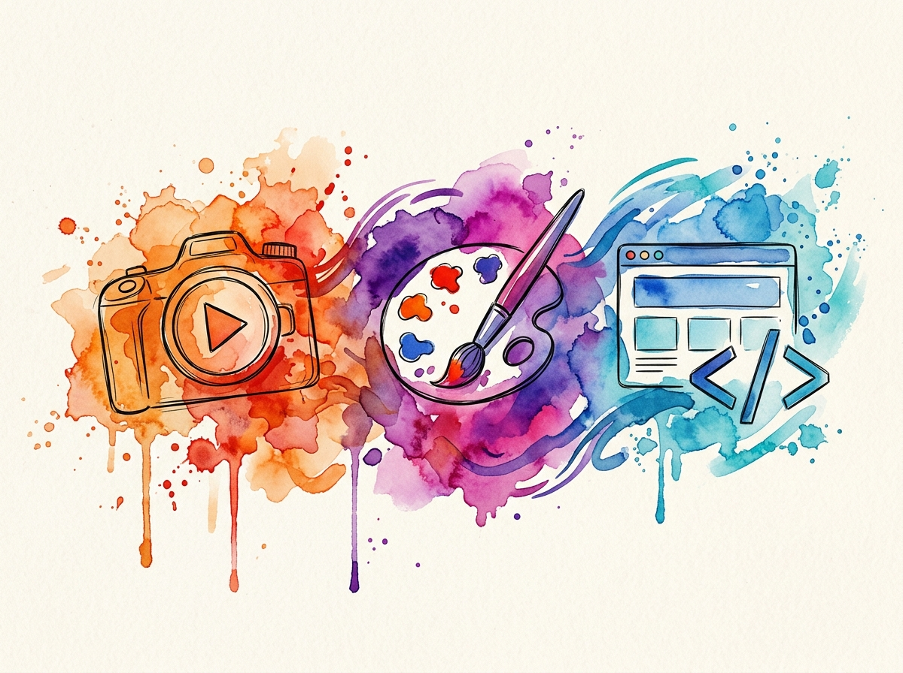

Kami adalah studio digital yang merapikan tiga sisi kebutuhan brand kamu: situs web yang cepat & rapi, materi visual yang enak dipandang, dan konten video yang bikin orang berhenti scroll.
Klik salah satu layanan untuk langsung melompat ke contoh karyanya.
Situs company profile, landing page, hingga web app custom — cepat, responsif, dan mudah dikelola.
Lihat karyaMateri visual untuk campaign, event, dan konten sosial media yang konsisten dengan identitas brand.
Lihat karyaAftermovie, konten reels, sampai video promosi dengan pacing dan color grading yang rapi.
Lihat karyaSebagian proyek yang pernah kami kerjakan bersama klien.
Belum ada karya di kategori ini.
Berawal dari kecintaan pada desain dan teknologi, kami hadir untuk membantu brand Anda tampil stand-out. Tim kami terdiri dari desainer, developer, dan videografer yang percaya bahwa visual yang baik bukan cuma soal estetika, tapi juga komunikasi yang tepat sasaran untuk mengeksekusi ide liar Anda menjadi karya digital yang berkesan.
Vylogix Studio lahir dari sebuah pemahaman sederhana: desain yang indah tidak akan maksimal tanpa sistem yang solid, dan kode yang canggih akan terasa kaku tanpa sentuhan estetika. Nama kami mewakili dua pilar utama dunia digital: Visual (Vy) dan Logic (Logix).
Kami adalah jembatan di antara keduanya. Mulai dari merancang antarmuka yang memanjakan mata, membangun sistem web yang presisi, hingga merangkai konten video yang bercerita—kami memastikan kehadiran digital brand Anda tidak hanya terlihat luar biasa, tapi juga bekerja dengan sempurna.

Jangan ragu untuk berdiskusi. Kami siap membedah kebutuhan digital brand atau event kamu dengan solusi yang pas di budget dan selesai tepat waktu.
*Tim Vylogix Studio akan merespons dalam waktu kurang dari 1x24 jam kerja.